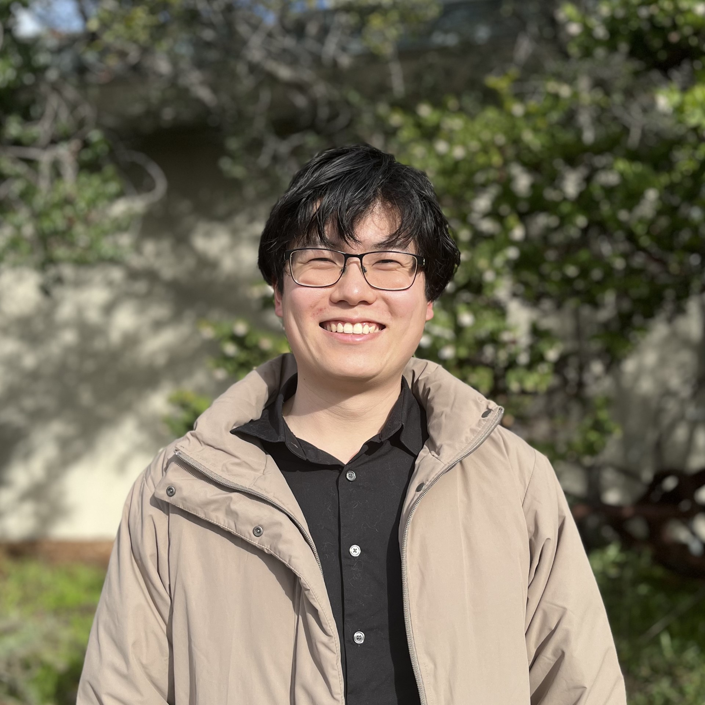

Joshua Lin
PhD Student at MIT (2020 - 2025)
Lattice Gauge Theorist at the Center of Theoretical Physics
Advised by Prof. Will Detmold
Publications:
-
(arxiv)
Dirac Traces and the Tutte Polynomial
(2024) Joshua Lin
-
(arxiv)
(JHEP)
Position-space renormalization schemes for four-quark operators in HQET
(2024) Joshua Lin, William Detmold, Stefan Meinel
-
(arxiv)
(JHEP)
Real-time Dynamics of the Schwinger Model as an Open Quantum System with Neural Density Operators
(2024) Joshua Lin, Di Luo, Xiaojun Yao, Phiala E. Shanahan
-
(arxiv)
(PoS)
Lattice Study of Spectator Effects in b-hadron Decays
(2022) Joshua Lin, William Detmold, Stefan Meinel
-
(arxiv)
(JHEP)
Machine Learning Templates for QCD Factorization in the Search for Physics Beyond the Standard Model
(2019) Joshua Lin, Wahid Bhimji, Benjamin Nachman
-
(arxiv)
(JHEP)
Boosting H->bb with Machine Learning
(2018) Joshua Lin, Marat Freytsis, Ian Moult, Benjamin Nachman